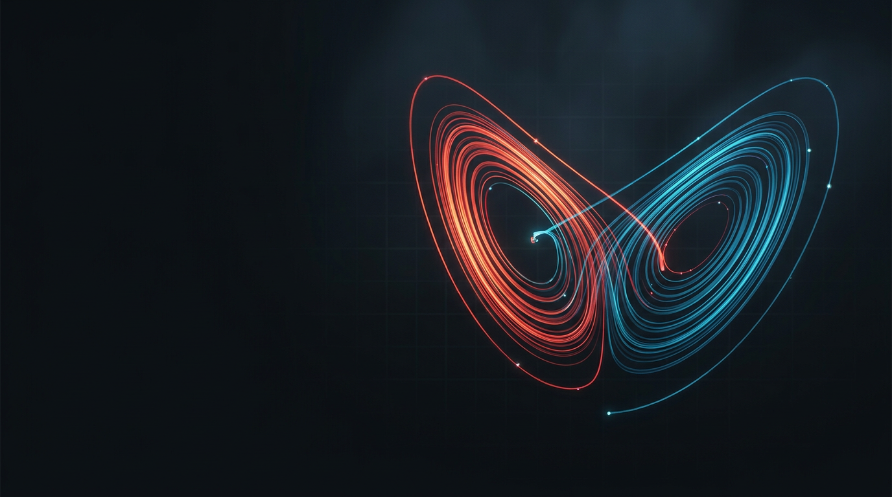
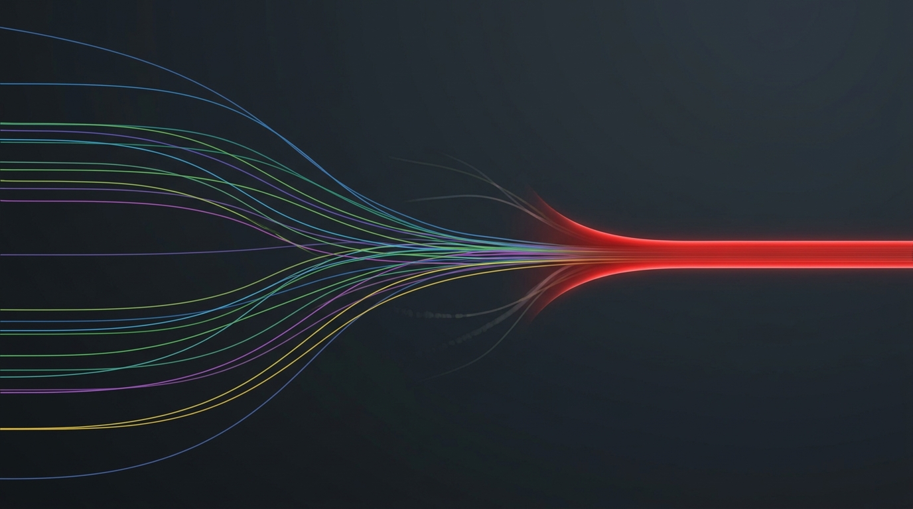
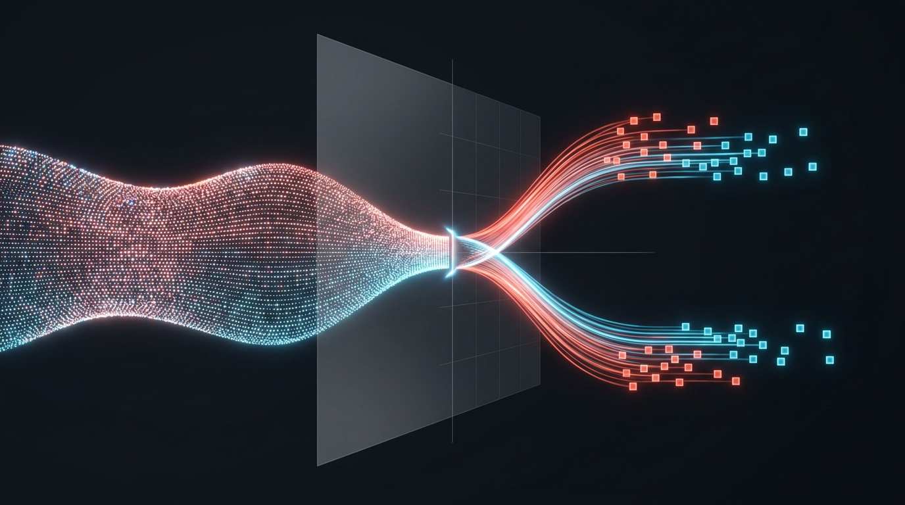
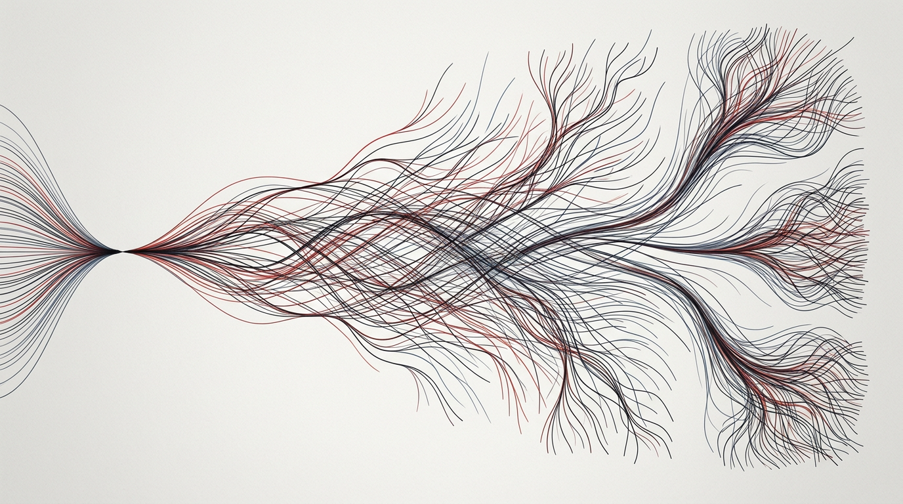
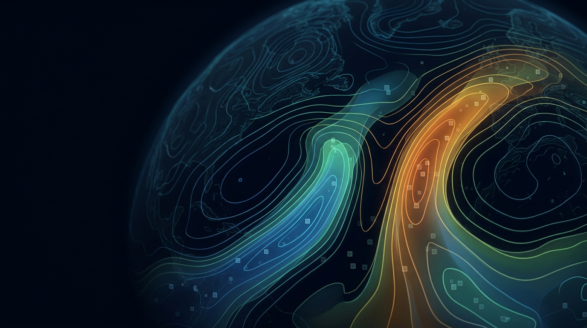

Chaos Talk Image Canvas

Lorenz State Space
Best title/section-break candidate. Reads immediately as chaos and leaves room for slide text.

Collapse Attractor Basin
Good for the collapse confound: low divergence can mean a narrow, unresponsive basin.

Token Decision Boundary
Useful for the “continuous machinery, discrete decisions” slide, though busier than the hero.

Branching Continuations
Matches the existing light deck; better as a full-slide visual than a text background.

Probability Weather Field
Eye-catching weather metaphor, but it leans more literal and map-like than the rest.